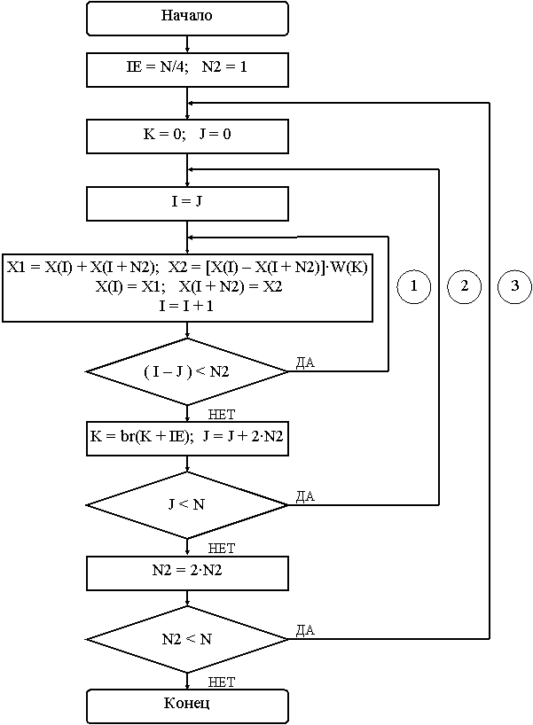

Как и в паре алгоритмов с прореживанием по времени, так и в паре алгоритмов с прореживанием по частоте один является основным и соответствует рис. 5.2, а второй получается перестановкой входных и выходных данных, чтобы поменять прямой порядок данных на двоично-инверсный и наоборот.
Ниже приведены граф-схема (рис. 7.1) и таблица индексов (табл. 7.1) 8-точечного БПФ, а также обобщенная схема алгоритма БПФ с прореживанием по частоте и прямым расположением входных данных (рис. 7.2). Далее приведены граф-схема (рис. 7.3) и таблица индексов (табл. 7.2) 8-точечного БПФ, а также обобщенная схема алгоритма БПФ с прореживанием по частоте и двоично-инверсным расположением входных данных (рис. 7.4).
Граф-схемы, таблицы индексов и схемы двух алгоритмов БПФ с прореживанием по частоте очень похожи друг на друга и алгоритмы БПФ с прореживанием по времени. Основное их различие заключается в начальных значениях приращений адресов и индексов, а также в направлении их изменения (увеличение или уменьшение). При этом в дополнительном алгоритме изменяется также порядок следования поворачивающих множителей с прямого на двоично-инверсный, что незначительно усложняет алгоритм.
При частоте используются такие же константы и переменные, как и при программировании алгоритма БПФ с прореживанием по времени.
Для получения поворачивающих множителей используется таблица одного периода синуса длиной N отсчетов. Реально необходимо только три четверти таблицы, так как необходимы только поворачивающие множители на половине периода. Поэтому первая и вторая четверти таблицы используются для получения синуса, а вторая и третья четверти – косинуса. Для перехода от синуса к косинусу и необходимо содержимое ячейки – QUARTN (четверть N).
Поскольку входные и выходные данные БПФ для удобства обработки должны располагаться в обычном порядке, то в зависимости от алгоритма перед вычислением БПФ или после вычисления необходимо выполнить двоично-инверсную перестановку данных.
Рисунок 7.1 – Граф-схема БПФ с прореживанием по частоте
и прямым порядком входных данных
Таблица 7.1 - Изменение индексов для БПФ с прореживанием по частоте и прямым порядком входных данных
| № п/п | N2 | IE | J | I | I + N2 | K | Цикл | Переход |
| 1 | 4 | 1 | 0 | 0 | 4 | 0 | 2 | |
| 2 | 1 | 1 | 5 | 1 | 2 | |||
| 3 | 2 | 2 | 6 | 2 | 2 | |||
| 4 | 3 | 3 | 7 | 3 | 2 | 3 | ||
| 5 | 2 | 2 | 0 | 0 | 2 | 0 | 1 | |
| 6 | 4 | 6 | 1 | 2 | ||||
| 7 | 1 | 1 | 3 | 2 | 1 | |||
| 8 | 5 | 7 | 1 | 3 | ||||
| 9 | 1 | 4 | 0 | 0 | 1 | 0 | 1 | |
| 10 | 2 | 3 | 1 | |||||
| 11 | 4 | 5 | 1 | |||||
| 12 | 6 | 7 | 1 |
Рисунок 7.2 – Схема алгоритма БПФ с прореживанием по частоте
и прямым порядком входных данных
Рисунок 7.3 – Граф-схема БПФ с прореживанием по частоте
и двоично-инверсным порядком входных данных
Таблица 7.2 - Изменение индексов для БПФ с прореживанием по частоте
и двоично-инверсным порядком входных данных
| № п/п | N2 | IE | J | I | I + N2 | K | Цикл | Переход |
| 1 | 1 | 2 | 0 | 0 | 1 | 0 | 2 | |
| 2 | 2 | 2 | 3 | 2 | 2 | |||
| 3 | 4 | 4 | 5 | 1 | 2 | |||
| 4 | 6 | 6 | 7 | 3 | 2 | 3 | ||
| 5 | 2 | 0 | 0 | 2 | 0 | 1 | ||
| 6 | 1 | 3 | 1 | 2 | ||||
| 7 | 4 | 4 | 6 | 2 | 1 | |||
| 8 | 5 | 7 | 1 | 3 | ||||
| 9 | 4 | 0 | 0 | 4 | 0 | 1 | ||
| 10 | 1 | 5 | 1 | |||||
| 11 | 2 | 6 | 1 | |||||
| 12 | 3 | 7 | 1 |

Рисунок 7.4 – Схема алгоритма БПФ с прореживанием по частоте
и двоично-инверсным порядком входных данных
Для проверки правильности работы программ БПФ можно использовать различные сигналы – импульс, ступенька, синусоида. Поскольку такие сигналы легко формировать, а их изображение Фурье также простое и известное, то с их помощью легко проверяется правильность работы программы БПФ.
Так, изображением импульсного во временной области сигнала в частотной области будет прямая линия, так как это широкополосный сигнал, состоящий из суммы всех частот от 0 до частоты Найквиста.
Для постоянного сигнала (прямая линия во временной области) в частотной области изображение будет в виде импульса, т. е. постоянная составляющая и никаких частот.
И, наконец, для синусоидального сигнала частотой
| Fс = Fд·k/N, | (7.1) |
где Fс – частота сигнала; Fд – частота дискретизации; k – номер гармоники;
N – размер выборки для БПФ, изображение будет содержать значения на соответствующей частоте и нули на остальных частотах. При этом соотношение между действительной и мнимой частями изображения будет определяться фазой анализируемого сигнала. Например, для синуса будет только мнимая часть, а для косинуса – только действительная.
Если частота сигнала не равна (7.1), то энергия такого сигнала размывается между ближайшими частотными отсчетами, и вместо одного отсчета получается несколько отсчетов с постепенно убывающей амплитудой.
Для получения обратного БПФ достаточно только поменять знак у функции синуса.
- Изучить теоретические сведения по теме лабораторной работы (подразд. 7.2).
- Получить у преподавателя задание для выполнения практической части работы.
- Согласно заданию написать, оттранслировать и выполнить программу.
- Продемонстрировать результат трансляции и работы программы преподавателю.
- Оформить и защитить отчет по лабораторной работе.
- Цель работы и исходные данные.
- Описание алгоритма работы программы.
- Листинг программы с комментариями.
- Выводы по работе.